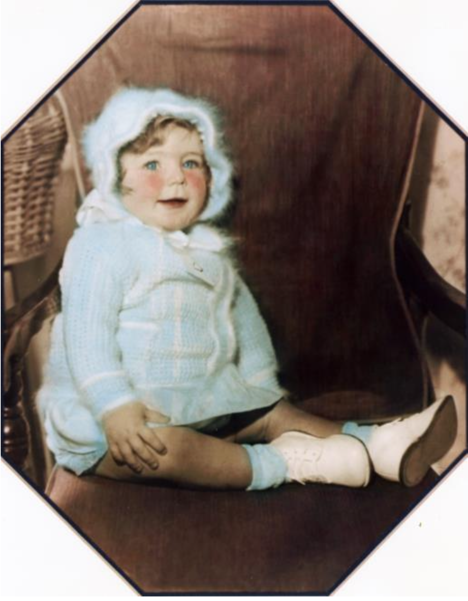

Welcome to Maria’s
Welcome to the Maria’s Italian Kitchen Family! We are excited to have you on board and very glad you have chosen to join our team.
It is our goal to ensure that every member of our team feels just like a member of the family, and we hope that as a member of our family you will always take pride in giving only your best to the team and to our guests.
Welcome aboard and good luck in training!
Maria’s History
Yes, there really is a Maria!
Maria Alfano moved to California from Hoboken, New Jersey, a place then sometimes called “Little Italy”, with her husband in the 1960’s. After arriving on the West Coast, they opened a small neighborhood market in Brentwood Village. It was in the small garage space next door, in 1975, that Maria opened her first kitchen and began offering classic Italian dishes made with the recipes her own mother Luisa had brought with her from Naples. Soon, the delicious food and friendly service had neighborhood families flocking in, and the first Maria’s was a huge success.
In 1985, Maria’s daughter, Madelyn, realized her vision of opening a real sit-down trattoria, just like the ones in Italy, when she opened the first Maria’s Italian Kitchen, in Sherman Oaks. That was just the beginning.
Today, Maria’s Italian Kitchen, still run by Madelyn, is an established and well- recognized L.A. staple with more than ten locations and growing! The recipes still call for only the finest ingredients, a passion for cooking and a love for the classic flavor of real homemade Italian food.
Maria’s has grown from its humble beginnings to the success it is today in no small part due to the quality of people that make up our team and the culture of a real “family” that we all share. That ongoing growth means opportunity for every member of the team, and that now includes you. We are glad to have you as part of the family and hope you’ll be proud to be a part of Maria’s rich and continuing history.
Maria’s Culture
Maria’s Italian Kitchen is about family, and we consider every member of this small company to be a part of that family. We work together every day with pride and respect; pride and respect for the jobs we do and for the people we work with. We make it a point to treat each and every member of our family with dignity and consideration as an individual. That attitude and commitment to people is a big part of creating the positive and welcoming atmosphere that makes Maria’s such a great place to come out and eat AND a great place to work.
We are dedicated to these principles of family, loyalty and respect not just because they’re part of what makes Maria’s successful as a business, but simply because that’s what our team members deserve as people.
That dedication carries over to the way we treat and serve our guests. Maria’s takes pride in being a neighborhood restaurant with great service from a friendly, knowledgeable team. We value each and every guest that comes through our doors, and the quality of their experience is our number one concern. Every guest is YOUR guest and we know as a member of the Maria’s family you will be welcoming, friendly and of service.
Come in with a positive attitude and a smile for your guests and fellow team members, and always show respect for everyone you see. That’s what it means to be a part of the Maria’s family.

You will see this posted in your restaurant because we really mean to live our culture and mission every day!
Our Culture
We prepare the highest quality food available, and our first ingredient is always love.
We treat our customers like honored guests in our home.
We treat our employees like family, always wanting their happiness and expecting their best.
We create success through profit and growth.
We treat everyone with respect and personal dignity.
We care about our community and our environment.
Mission Statement
Maria’s Italian Kitchen is committed to being the #1 neighborhood restaurant offering great Italian food at reasonable prices, served by warm, friendly and knowledgeable people in a homey atmosphere.
We will attain this goal through use of only the freshest ingredients available, our dedication to ongoing comprehensive employee education, keeping our environment clean and fresh looking at all times, and our strong desire for TOTAL GUEST SATISFACTION